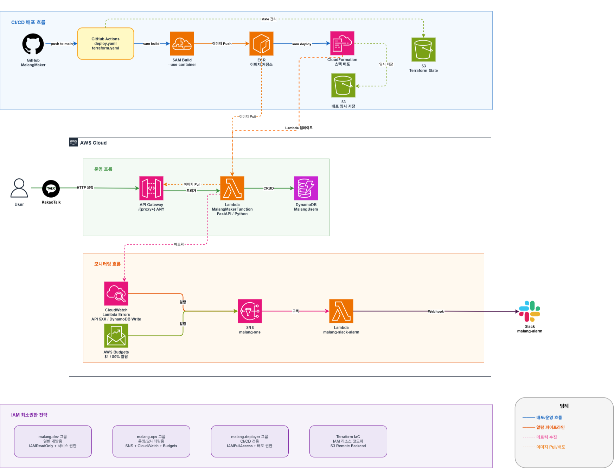
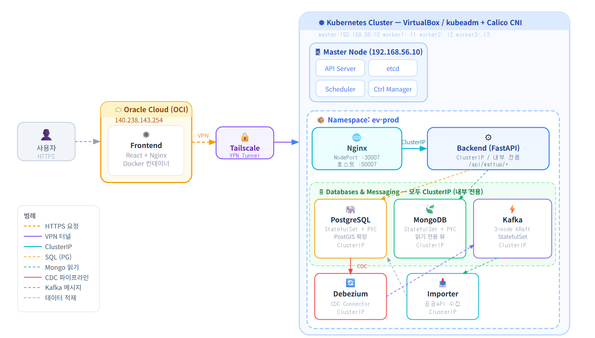

최수정
온프레미스와 AWS를 오가며 네트워크·인프라를 설계하고, CI/CD와 모니터링 파이프라인을 구축합니다.
Kubernetes 기반 MSA 인프라 설계부터 AWS 마이그레이션까지 직접 다루며 실 운영 서비스를 만들어왔습니다.
보안을 고려한 설계와 자동화 기반 운영 효율화를 지향하며, 로그·메트릭을 AI로 분석해
리포트로 전달하는 모니터링 파이프라인도 구축했습니다.
WanderPool

현대오토에버 클라우드 스쿨 3기 4인 팀 프로젝트. 온프레미스 Kubernetes 클러스터(물리 서버 2대, VM 9대) 위에 4개 마이크로서비스를 구성하고, AWS EKS로 마이그레이션했습니다. 네트워크·인프라 설계, CI/CD 구축, 모니터링·로깅 AI 파이프라인, AWS 마이그레이션을 맡았습니다.
- 🌐 Kong Gateway 단일 진입점 도입으로 서비스별 인증 로직 중복 제거
- 🔒 CIDR·S2S VPN 설계로 온프레미스 ↔ AWS 네트워크 연동
- 🤖 Lambda 기반 AI Observability 파이프라인으로 Slack 일일 리포트 자동화
- ☁️ 온프레미스 → AWS EKS 마이그레이션 주도
말랑이 메이커

카카오톡을 통해 자신만의 캐릭터 '말랑이'를 육성하는 게임형 챗봇 서비스입니다. 비정형 트래픽에 최적화된 서버리스 아키텍처로 설계해 2026.06까지 실제 운영했습니다.
- ⚡ Lambda + DynamoDB 서버리스 구조로 월 운영비 $0.03 달성
- 🐛 k6 부하 테스트로 실제 운영 버그(KeyError) 발견 및 수정
- 🔥 EventBridge 웜업으로 콜드스타트 6s → 284ms 개선
- 🔐 Terraform IaC + IAM 최소권한 3그룹 분리로 배포 자동화
Wattup

전기차 충전소 실시간 예약 및 현황 관리 서비스. VirtualBox 기반 On-premise Kubernetes 클러스터를 설계·구축하고 프론트엔드 개발을 담당했습니다.
- 🏗️ kubeadm으로 멀티 노드(master+worker 3개) 클러스터 직접 구축, EKS 대신 온프레미스 선택
- 🔌 Calico + Tailscale VPN 충돌 해결 (felixconfiguration 패치)
- 📉 JVM 힙 설정으로 Kafka 메모리 사용량 95% → 76% 최적화
- 🧩 Vite 빌드타임 환경변수 구조 문제 해결
침수사고 예방 시스템
지하차도 침수사고 예방을 목표로 아두이노 기반 차량 통제 및 지도 알림 시스템을 제작했습니다. 팀장으로서 아두이노 센서 제어, 카카오 MAP API 연동, 실시간 데이터 처리 로직 설계를 주도했습니다. 캡스톤 이후 실시간성 문제를 개선하여 WebSocket 기반 버전으로 발전시켰습니다.
- 🌊 수위/유량 센서 → LED 단계적 경고(RED→YELLOW→WHITE)로 실시간 위험 알림
- 🗺️ 카카오 MAP API로 침수 위험 지역 마커 및 주변 상황 확인
- 📡 HTTP 폴링 → WebSocket 전환으로 실시간 센서 데이터 지연 해결
- 🔧 캡스톤 이후 Node.js + Socket.io 개인 프로젝트로 발전, /admin 라우팅으로 이력 관리